Multi-disciplinary designer
with a focus on problem solving, building systems, and expanding creative opportunities.
VTL Branding
Branding for Varonis Threat Labs
Branding for the internal threat research team differentiates it from the Varonis universe.
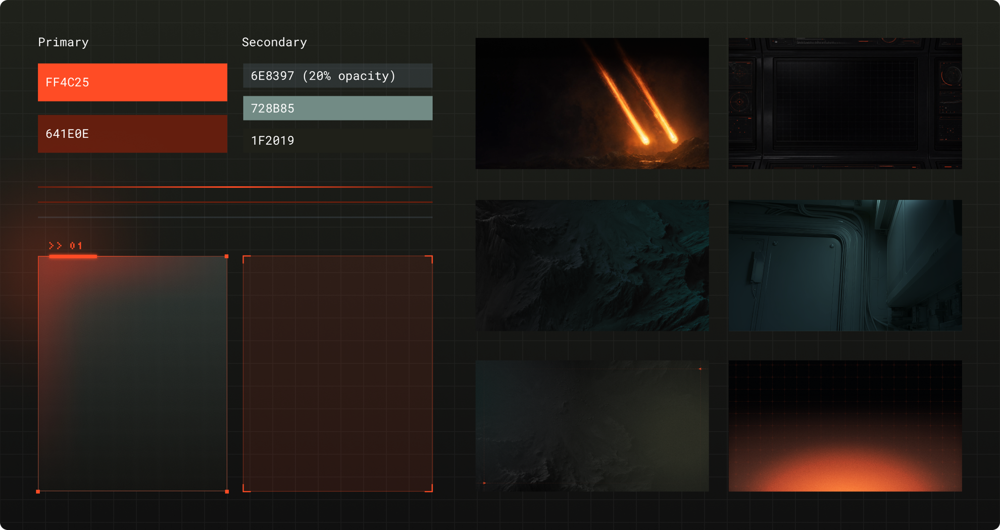
Breach at the Beach
CTF game
A fun beach-themed Capture the Flag game that features Pixel, the VTL mascot.
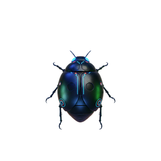
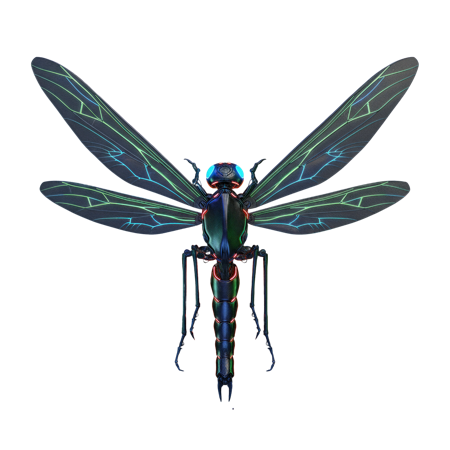
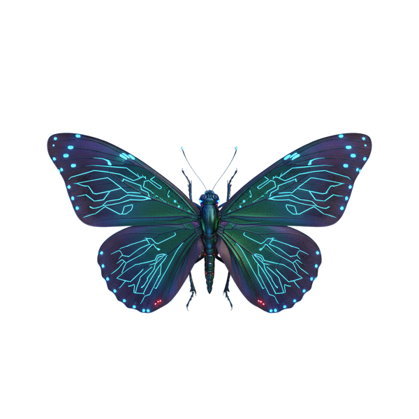
Meet Pixel
Social activation
Social media
Templates built to scale
Easy to use templates built in Canva for frequently posted content, alleviating production work for the creative team.
RSAC
Flagship booth graphics
Graphics for the 2024 – 2026 flagship booths.
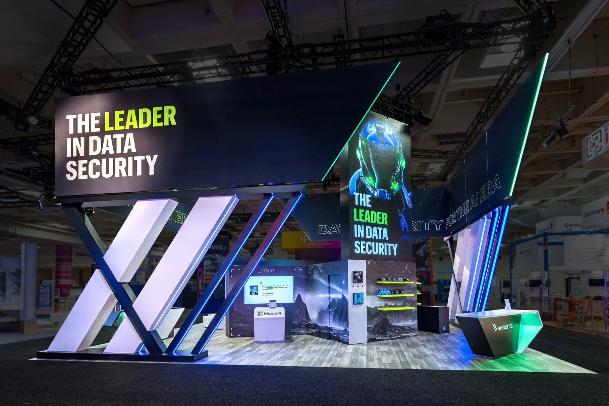
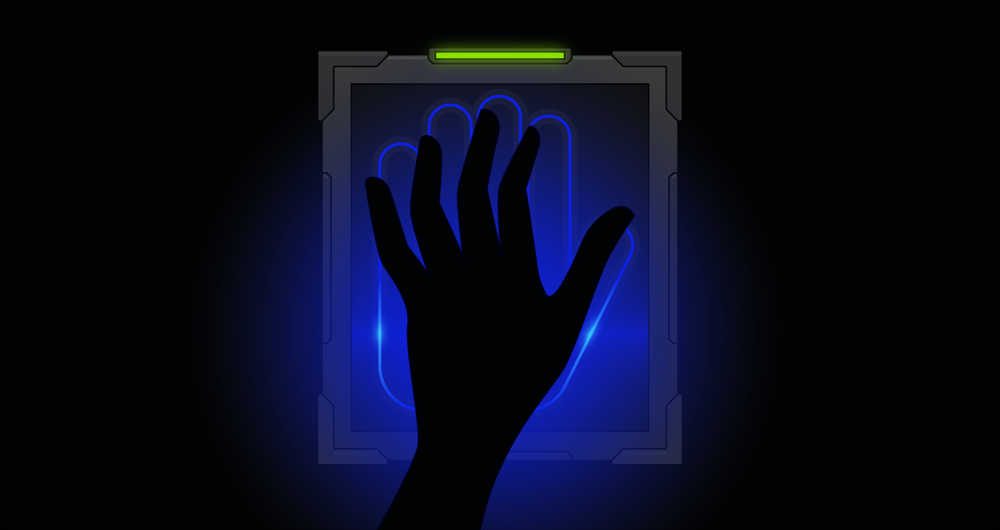
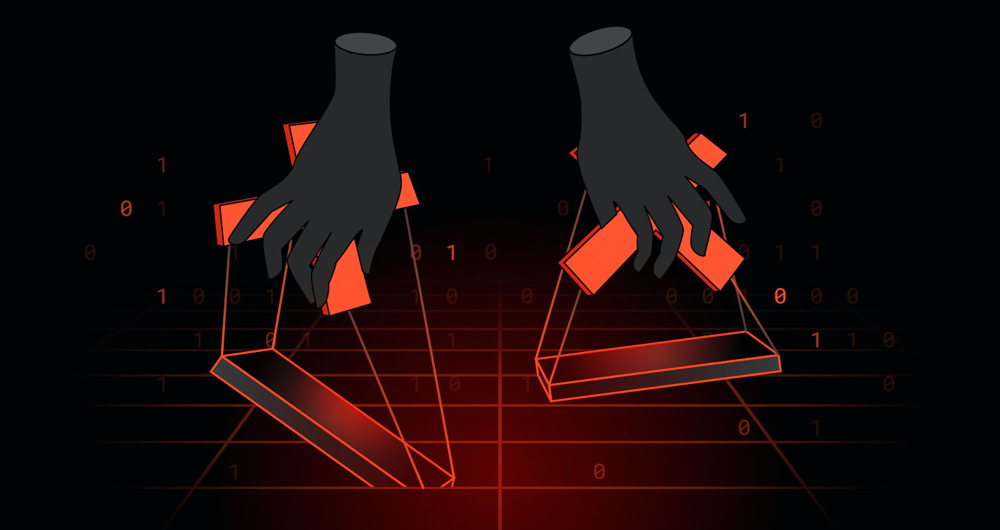
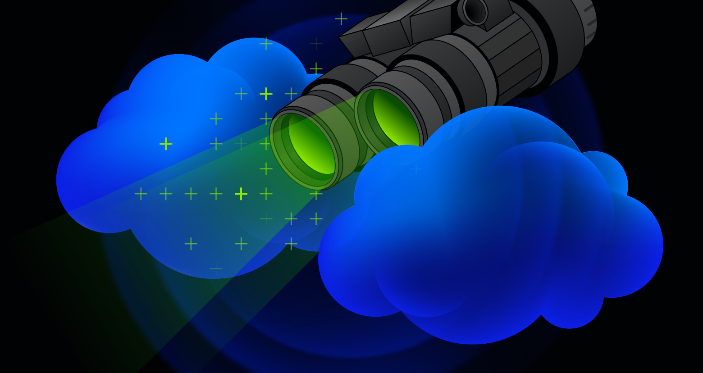
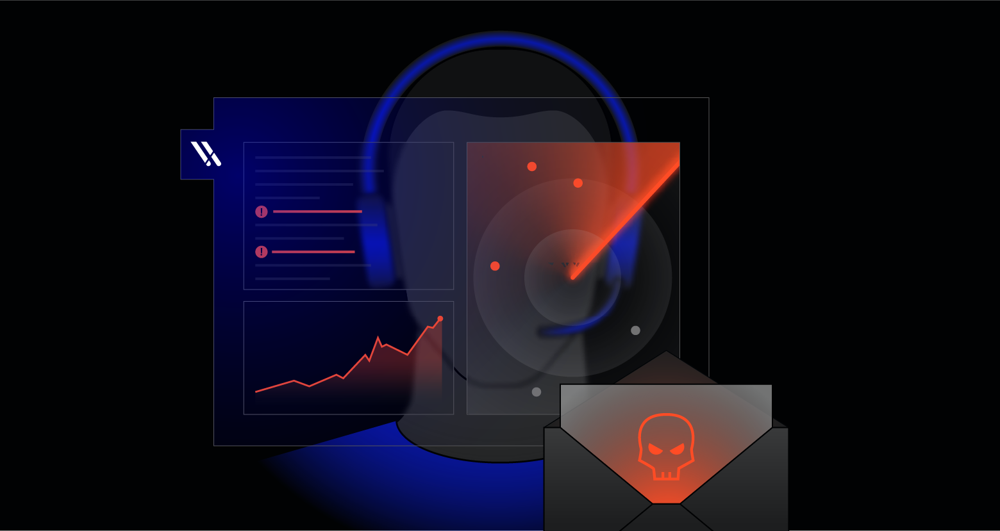
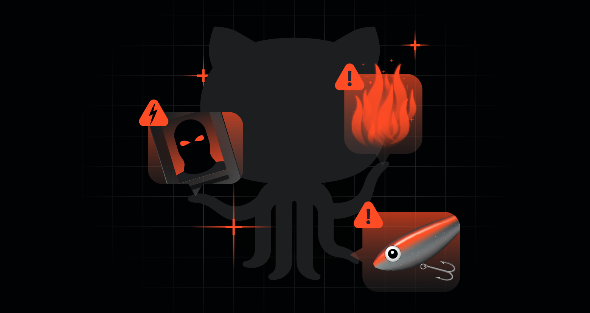
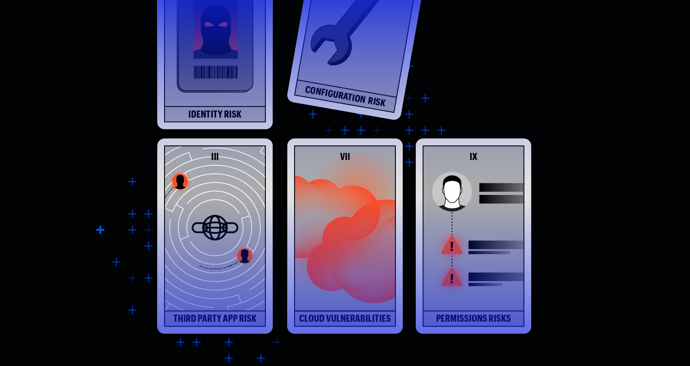
Blog heroes
Custom illustrations
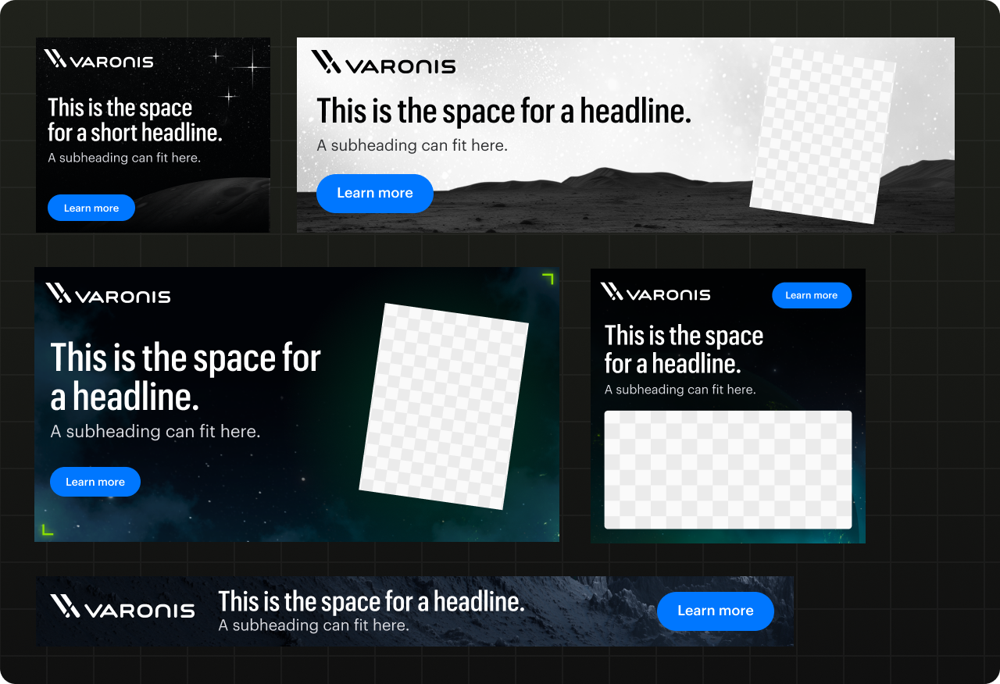
Ad templates
Figma Buzz Templates